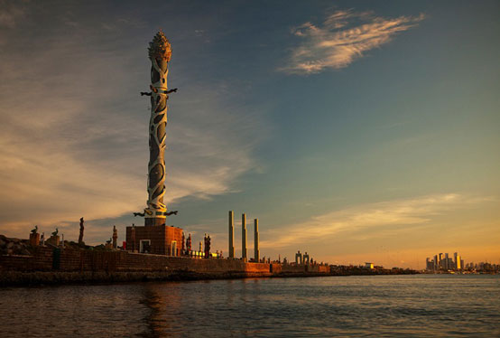
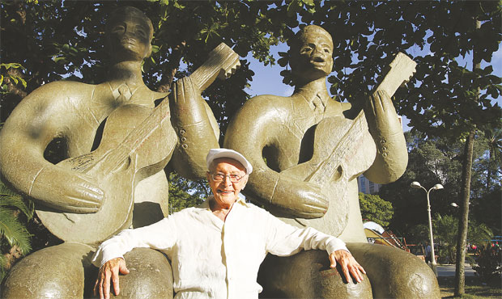

Ponte Maurício de Nassau
A Ponte Maurício de Nassau é uma ponte de ferro localizada no Recife Antigo, em Pernambuco, Brasil. Ela liga o continente à Ilha de Antônio Vaz, também conhecida como Ilha de Recife.
Quando foi construida?
A ponte foi construída em 1644 durante a invasão holandesa, época em que o governador Maurício de Nassau liderava a administração da colônia holandesa no Brasil. A ponte foi construída para facilitar o transporte de mercadorias e tropas entre a ilha e o continente, sendo um importante marco histórico da cidade do Recife.
Dias atuais
Atualmente, a Ponte Maurício de Nassau é uma atração turística muito visitada por turistas que querem conhecer a história e a arquitetura do Recife Antigo. Além disso, a vista da ponte para o Rio Capibaribe é incrível, especialmente no pôr do sol. Na região próxima à ponte, é possível encontrar o Parque das Esculturas, que abriga diversas esculturas de artistas nacionais e internacionais, tornando a área ainda mais atrativa para turistas e moradores locais.
Parque das Esculturas
O Parque das Esculturas é um espaço cultural e turístico localizado próximo à Ponte Maurício de Nassau, no bairro do Recife Antigo, em Pernambuco, Brasil.
Quando foi construído?
Inaugurado em 2000, o parque tem como objetivo divulgar a arte contemporânea, promover a cultura e o turismo na região.
Dias atuais
O parque abriga diversas esculturas de artistas nacionais e internacionais,como Abelardo da Hora, Francisco Brennand, Emanoel Araújo, entre outros. As esculturas são feitas em diferentes materiais, como bronze, ferro, cimento, vidro, pedra e madeira, e têm diferentes temáticas, como a história do Brasil, a cultura popular e a arte abstrata.